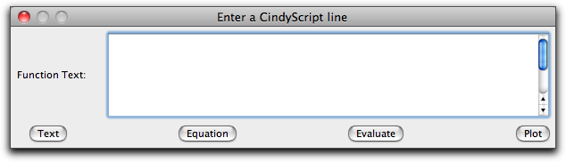
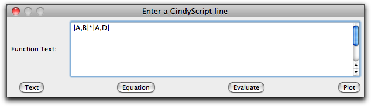
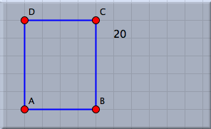
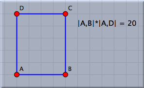
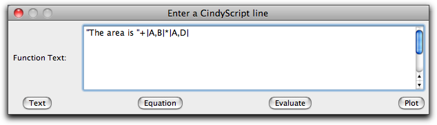
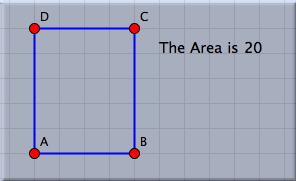
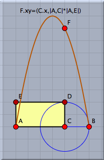
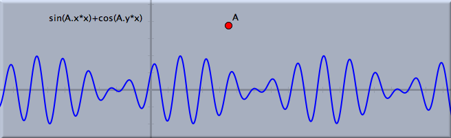

Function
Function mode provides an extremely powerful tool that can be used in many circumstances. Briefly, function mode provides a one-line interface to the
CindyScript language. This one line can be either simply evaluated (so that the result is displayed) or displayed as an equation or evaluated with all side effects. Since
CindyScript is a powerful language and even one line of
CindyScript may encode very high level interactions, we will here demonstrate a few uses of function mode by means of a couple of examples.
When you are in function mode and click somewhere in the window, the following window will pop up:
 |
| The "enter a function" dialog |
There you can enter one line of
CindyScript code. The buttons allow you to determine how this line should be processed.
- Text: calculates the result of the code and displays it.
- Equation: displays the line entered literally, followed by an equation sign and the result of the evaluation. So a line "4+7" becomes the displayed equation "4+7 = 11".
- Evaluate: evaluates the line and performs all side effects of the line (such as setting variables, drawing, or plotting).
We will present a few examples to illustrate the use of functions.
Calculations in Constructions
Consider the following drawing of a rectangle:
We want to calculate and display the area of this rectangle. A suitable
CindyScript expression for calculating the area of this rectangle is
|A,B|*|A,C|. We enter this function into the function dialog.
 |
| Entering the text |
If we now press the "Text" button, we get the following picture on the left; if we press the "Equation" button, we get the picture on the right.
 | |
 |
| Text | | Equation |
If we want to display the result in a custom text, we may achieve this by
entering the following code and hitting the "Text" button:
 |
| Creating a custom text |
In this case, the line consists of a string to which the result of the calculation is appended. The result is again a string, which contains the desired text. The result in the window looks as follows:
 |
| Result of creating a custom text |
Evaluation with Side Effects
Pressing the evaluate button allows for the evaluation of side effects. We will illustrate this feature by a slightly more sophisticated example. In the picture below the rectangle has been constructed in a way such that its perimeter remains constant when point C is moved. We will use this construction to analyze for which position of point C we obtain the largest area of the rectangle. Entering the line
into the function dialog will move the point F to a position whose
x-coordinate is the same as that of point C. The
y-coordinate of F will be the area. Thus while we move C we can watch point F and determine for which position of C it assumes its maximal
y-value. In the figure on the left a locus is constructed (mover = C, tracer = F) that shows the areas for all possible positions of C.
 |
| Combining geometry and functions |
Plotting Functions
As a final application we shall demonstrate how to use function mode for generating a plot of a function. For this we simply use the plot function of
CindyScript and evaluate it via the function mode dialog. If the plot contains parameters that depend on the data of the elements in the drawing, then it is automatically updated as the elements are moved. In the example below, two sine waves are superimposed whose frequencies depend on the position of A. The code line is simply evaluated in the function mode dialog.
 |
| Plotting a function |
Click Referencing
As in
text mode it is possible to obtain the reference of a geometric element by simply clicking on it in an arbitrary view. This simplifies the process of entering a formula in the dialog box. Clicking on a text that contains a measured number (for instance a distance, an angle, or an area) produces a reference to this number. Clicking on the text of another function reproduces the defining text of this function.
Furthermore, it is possible by a press–drag–release operation with the mouse to measure the distance between two points directly. If, for instance, A and B are two points in a geometric view, then pressing the mouse over A, dragging to B, and releasing it will produce the text
|A,B| in the function dialog.
Synopsis
Function mode allows for the calculating, evaluating, and plotting of functions via a one-line interface to
CindyScript.